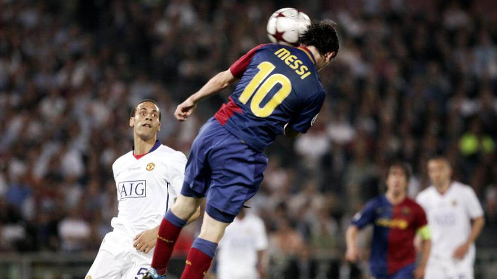
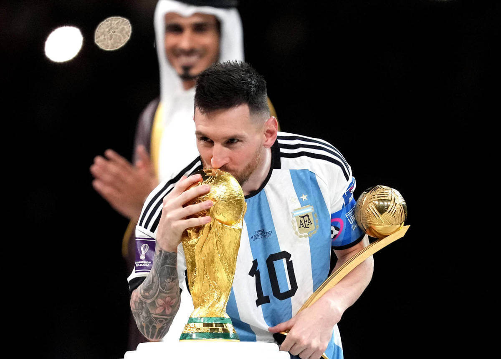
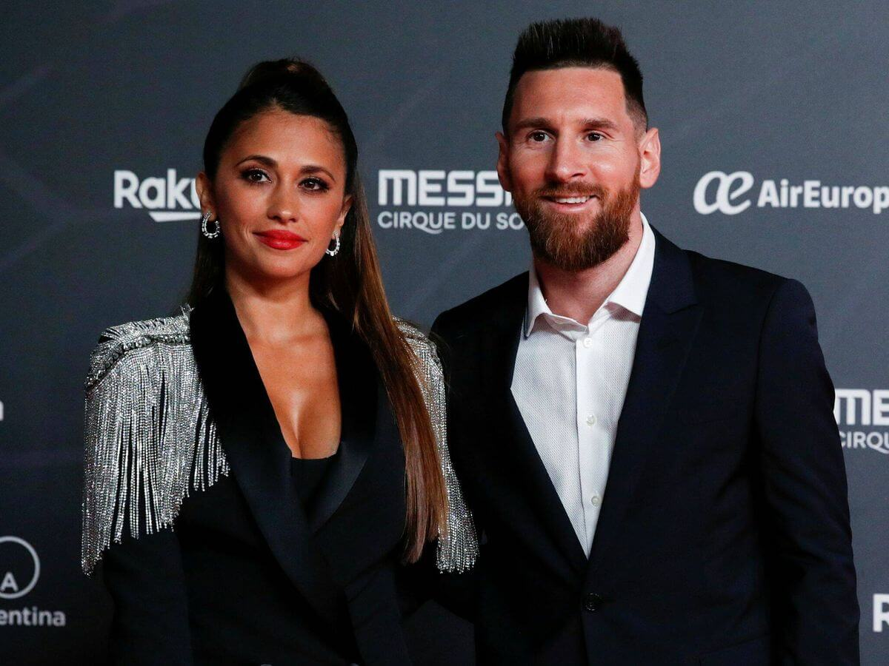

Lionel Andres Messi Cuccittini un 24 de Junio de 1987 en Rosario, Santa Fe. Hijo de Jorge Messi Y Celia Cuccittini, empezo a jugar desde los 4 años a la pelota, en el club de barrio Abanderado Grandoli, para luego a los 8 años irse a Newell's Old Boys. Desde que era chico, era imparable, mejor que los niños de su edad, e inclusive mas grandes. Le diagnosticaron una deficiencia de la hormona de crecimiento, por lo cual paso gran parte de su infancia inyectandose el medicamento para poder solventarlo. El 8 de enero de 2001, con 13 años ficho para el F.C Barcelona, ingresando a la categoria infantil.
El 16 de noviembre de 2003, debuta con el primer equipo a la edad de 16 años, con el entrenador Frank Rijkaard. En 2005 gana la liga española y la supercopa española, y es llamado para jugar el mundial sub-20 para argentina, el cual termina ganando. En 2006, juega su primer Champions League, metiendo 1 gol y 2 asistencias, ganandola pero sin jugar la final. Tambien gana la liga y la copa española. En 2007 juega su primera copa america con su seleccion, llegando a la final, aunque perdiendola contra brasil 0-3, siendo esta su primera derrota en una final con su selección. En 2008 es convocado para jugar los juegos olimpicos, ganando la medalla de oro.
En 2009 el Barcelona cambia de tecnico a Pep Guardiola, empezando el llamado "Mejor equipo de la historia". Con Messi a la cabeza, son el primer equipo de la historia en ganar el sextete. Ese año, Messi gana La copa, la liga española, la supercopa, la Champions League, la supercopa de europa y el mundial de clubes, coronando con su primer balon de oro. En 2010 gana la liga y la supercopa de españa, tambien gana su segundo balon de oro y su primer bota de oro. En 2011 casi vuelve a conseguir otro sextete, ganando la liga, la supercopa, la Champions, la supercopa de europa y el mundial de clubes, lo que le da su tercer balon de oro.
En 2012 logra un hito historico, es el primer jugador en llegar a los 91 goles en un año natural, superando el record de Gerd Muller y Pele. Ese año gana la copa, y la bota y balon de oro. En 2013 gana la liga española y la supercopa, ademas de su tercera bota de oro.
En 2014, Messi juega el mundial, llegando hasta la final perdiendola contra alemania 0-1, sienda esta su segunda derrota en finales con su seleccion. En 2015 empieza su segunda era dorada, con la llegada de Neymar y Luis Suarez se forma la MSN, uno de los mejores tridentes ofensivos de la historia con los que gano la liga, la copa, la Champions, la supercopa de europa y el mundial de clubes, lo que da su quinto balon de oro, siendo el primer jugador en llegar a esta cifra. Para su desgracia, ese año juega tambien la copa america con su pais, llegando a la final y perdiendo contra chile en penales, su tercera derrota en una final con su selección. En 2016 gana la liga, la copa española y la supercopa española. Tambien juega la copa america conmemorativa a los 100 años, la cual vuelve a llegar a la instancia final, pero termina perdiendo, nuevamente en penales, con esta llegando a 4 finales perdidas. Ese año, Messi hace publico su retiro de la seleccion, luego de las fuertes criticas de la prensa argentina a su persona, aunque en un futuro vuelva.
En 2017 gana la copa española y su cuarta bota de oro. En 2018 juega el mundial llegando a octavos perdiendo 4-3 contra francia, la futura campeona. Gana la liga, la copa y supercopa española, y su quinta bota de oro. En 2019 juega la copa america llegando hasta la semifinal contra brasil, perdiendo un partido cuestinable por parte de el arbitraje. Ese año gana la liga y hace una actuacion magistral en la Champions, llegando hasta la semifinal, lo que le da su sexta bota de oro, otro hito historico, y su sexto balon de oro. En 2020 fue un año dificil, no gano nada con su club y su deseo de irse del Barcelona aumentaba de a poco. En 2021 juega en el Barcelona hasta junio, donde gana la copa, para luego retirarse hacia el PSG. Ese año juega con su seleccion la copa america, en la que nuevamente llega a la final contra brasil, para despues de 4 finales ganar 1-0 rompiendo su mala suerte , ganando su primer titulo con argentina. Ese año gana su septimo balon de oro consiguiendo otro record historico. En 2022, ya en el PSG, gana la ligue 1 y la supercopa de francia. Tambien juega el mundial, haciendo una actuacion asombrosa llegando a la final, y esta vez si, gana su primer mundial y el tercero de la selección.
Desde 2007 esta con Antonella Roccuzzo, la cual conoce desde que era un niño. En 2017 se casa con ella, con la cual ya tenia 2 hijos, a la espera de un tercero.
